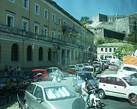
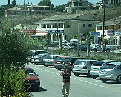

|
Another bus tour---this time in beautiful Corfu |
On Corfu, Greece. |

Beautiful pool in a breathtaking setting. |
Small cafe for snacks and refreshments. |

A cafe for snacks and refreshments. |
Around the snack bar--- typical countryside |

There are many heights in Corfu which produce beautiful vistas. |
Corfu is the principal island of a group of seven islands, five of which are inhabited. |
|
|

Corfu has been inhabited since the 7th century B.C.E. |
A rather minimal snack bar. |
The problem with bus tours is you always stop at some snack bar instead of seeing some interesting things. |

Scenes along a road on Corfu |
You can see how hilly Corfu is, even in the interior |
|
Small village in the distance. |
|
|
|
Scenes around Corfu Town (Kerkyra in Greek) |
|

Driving along the shore in Corfu Town. |
Parking is clearly a problem in Corfu Town. |

Adivouniotiva Church |
The town of Corfu, one of Greece's largest medieval towns. |

|

Adivouniotiva Church |

Because of having very little parking available and expensive fuel, many people rode motorcycles. |

Venetian Fortress in the background |
|

Typical street in Corfu. |

Old Venetian Fortress out the window of the bus. |

Venetian Fortress in the background through the bus window. |

|

|

|